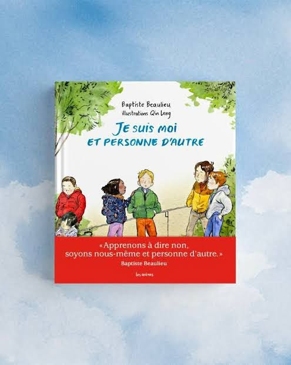

Qui es-tu ?
Je suis moi,
Ni l’ombre de lui, ni l’écho de toi.
Libre de vivre, libre de penser,
Sans masque imposé, sans chaîne à briser.
Pourquoi tiens-tu tant à me façonner,
À me modeler pour mieux m’effacer ?
À quoi bon fondre nos âmes en un moule,
Quand le vent chante mille voix qui s’enroulent ?
Sommes-nous voués à la ressemblance,
À renier nos couleurs, notre danse ?
Peut-on, sans trahir nos âmes uniques,
Être ensemble et former l’harmonique ?
Ni toi comme moi, ni moi comme toi,
L’éclat réside dans nos mille éclats.
La richesse fleurit de la diversité,
L’unicité engendre la pauvreté.
Je suis moi, et c’est là ma lumière,
Un souffle d’infini dans l’univers.
Toi aussi sois toi, et nous serons,
Des astres libres dans la même oraison.
Djamel Metref
At Yenni le 13 décembre 2024

← Tous les poèmes